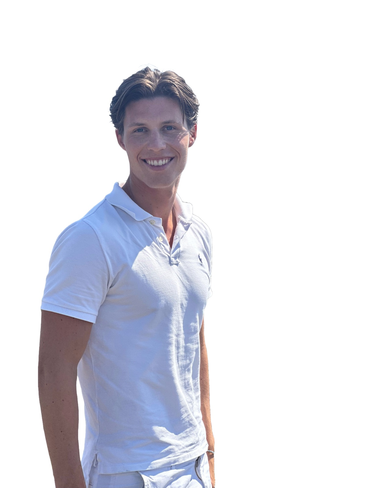
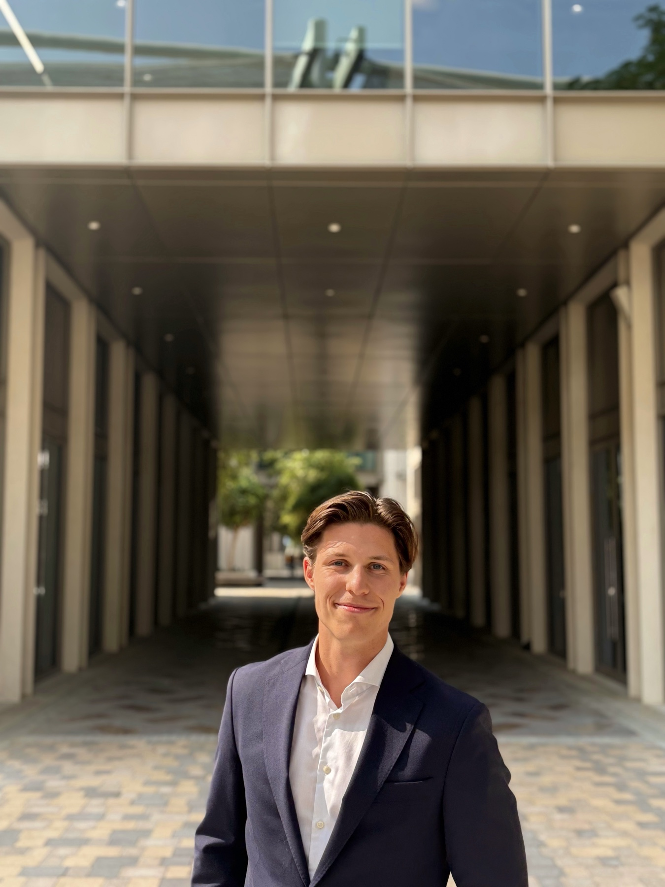
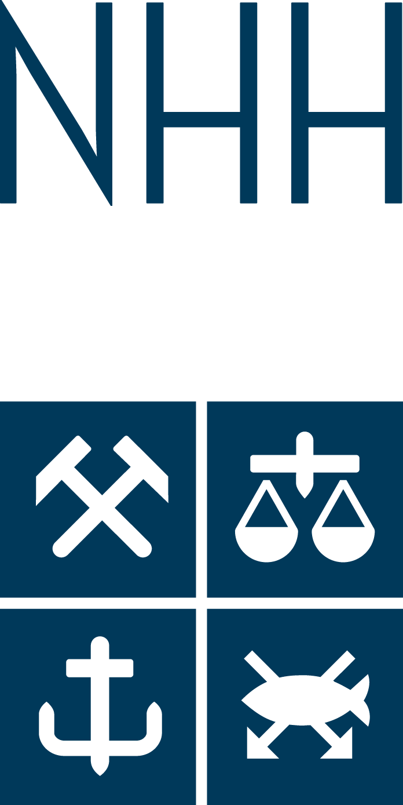

Strategy consulting · Oslo
Capgemini Invent
Analysed AI-driven disruption in technology, media and telecom. Developed venture business cases and built an AI-powered tool for financial and strategic evaluation.
Bergen · Oslo · Vienna
I’m Philip, an NHH finance and CEMS student who enjoys turning complex questions into clear analysis, useful tools and better decisions.

A little about me
My experience spans strategy consulting, maritime advisory and financial audit. Across each role, I have been drawn to the same challenge. I want to understand what matters, structure the problem and turn the answer into something practical.
Outside work, I build small digital projects, play competitive football and travel whenever I can. Those interests keep me curious, disciplined and open to perspectives beyond finance.
Start a conversation4.9/5.0Master’s GPA
25+Countries visited
3Professional fields
2027CEMS graduation
Experience
Strategy consulting · Oslo
Analysed AI-driven disruption in technology, media and telecom. Developed venture business cases and built an AI-powered tool for financial and strategic evaluation.
Maritime advisory · Dubai
Built strategic and financial analyses of maritime technologies in the GCC and contributed to corporate HSE and ESG frameworks.
Audit & assurance · Bergen
Supported audits of public and private companies, developed dynamic control-testing models and surfaced financial risks for senior teams.

“The best work usually starts with a good question.”
Built from curiosity
A visual attempt to understand where a lifetime actually goes.
Places, photographs and memories collected on an interactive map.
Small interactive projects built to learn by making.
A conversational way to explore my background and interests.
Education
MSc in Finance and CEMS Master in International Management · GPA 4.9/5.0

CEMS term abroad with an international management focus.
Exchange semester focused on innovation, negotiation and entrepreneurship · GPA 3.9/4.0
Away from the desk
I’ve played football across several clubs and levels, including SK Brann’s youth setup and the University of Michigan. I’m equally happy planning the next trip, documenting places I’ve visited or building something simply because I want to know if I can.
My football journeySay hello